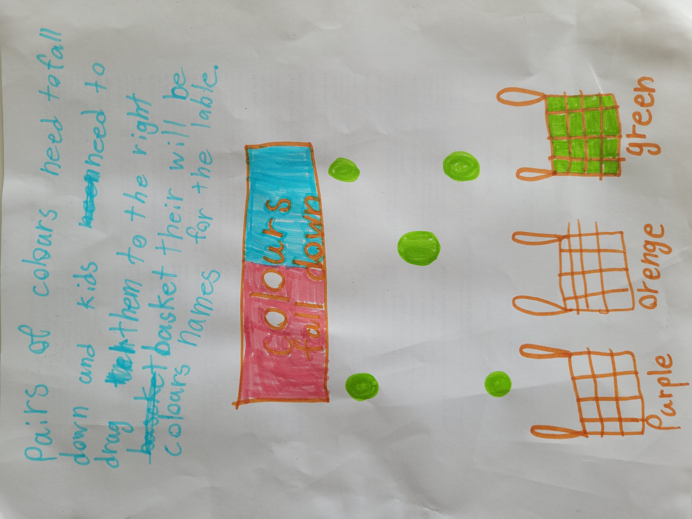
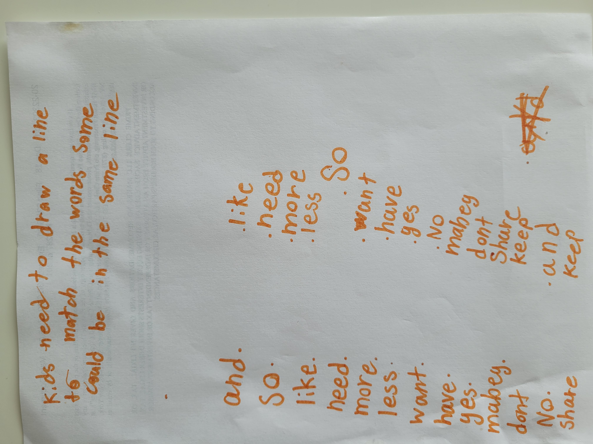
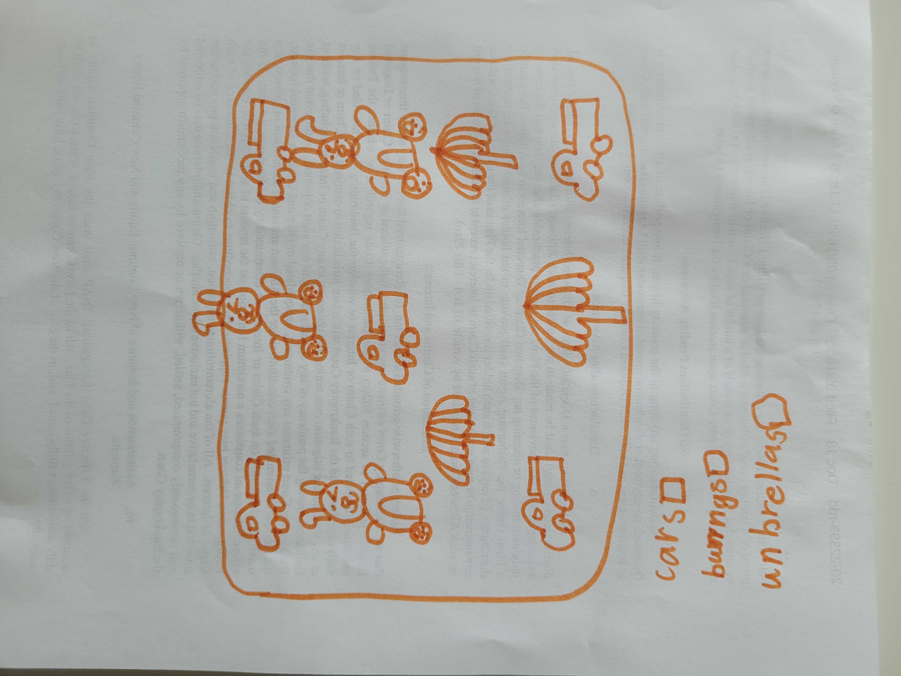

User Name Page
Clio Design
这里是用户名字页面。下一步进入游戏列表，选择具体游戏开始体验。
创作者：嘻嘻
当前已接入 4 个可玩游戏：Sorting Workshop（分拣工坊）、Prediction Workshop（预测工坊）、Word Match（连线组词）、Find It（寻找游戏）。
Design Insight

我们保留了她的核心想法，并将它实现为一个可以真正体验的小游戏。设计重点是把“观察”与“预测”拆开，让孩子先看到规律，再进行判断练习，避免把两种认知能力混成同一类统计。
Design Draft 2

评语：第二稿最好的地方是“规则动作单一而明确”，孩子只需要聚焦“连正确关系”，认知负担更可控。后续优化方向是继续保持词义关系的明确性，避免引入边界模糊的词对。
Design Draft 3

评语：第三稿的亮点是目标非常直观，孩子能快速进入“看见—定位—点击”的节奏。设计上保留了自由探索感，同时通过勾选反馈建立清晰的完成感，非常适合做 Creative Studio 的轻量可玩版本。